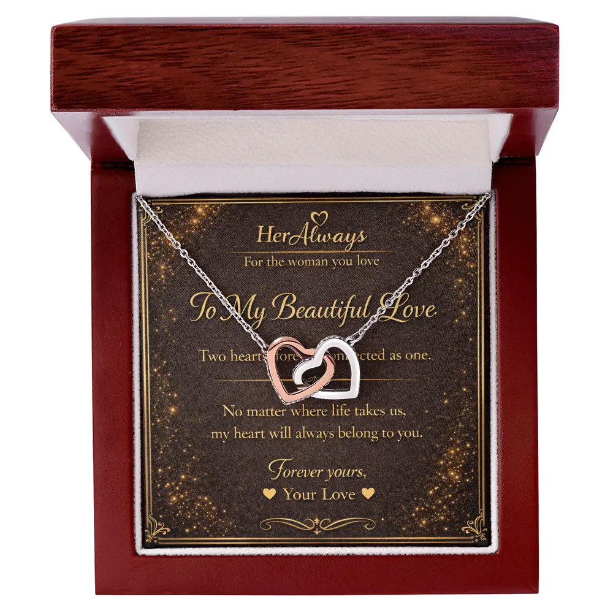
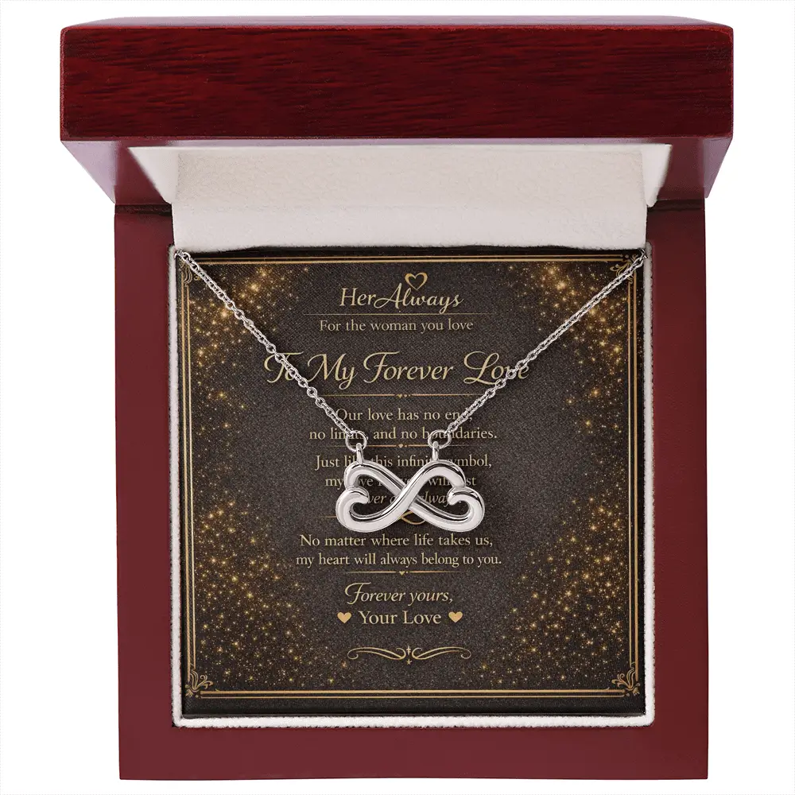
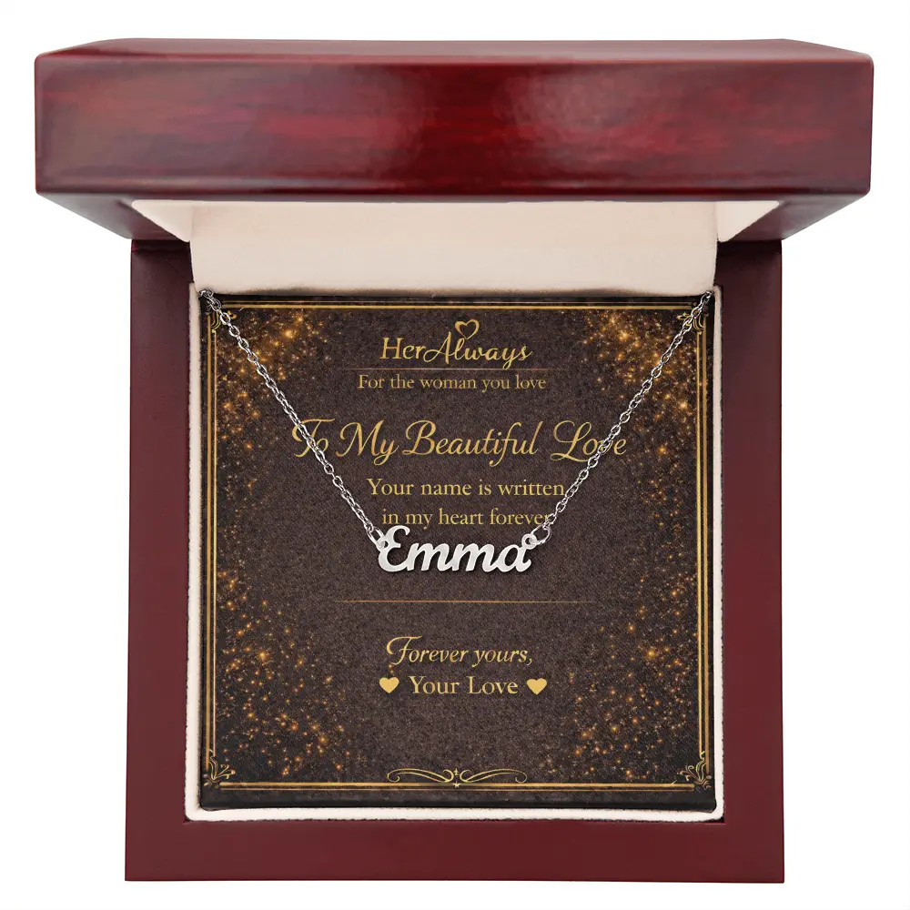
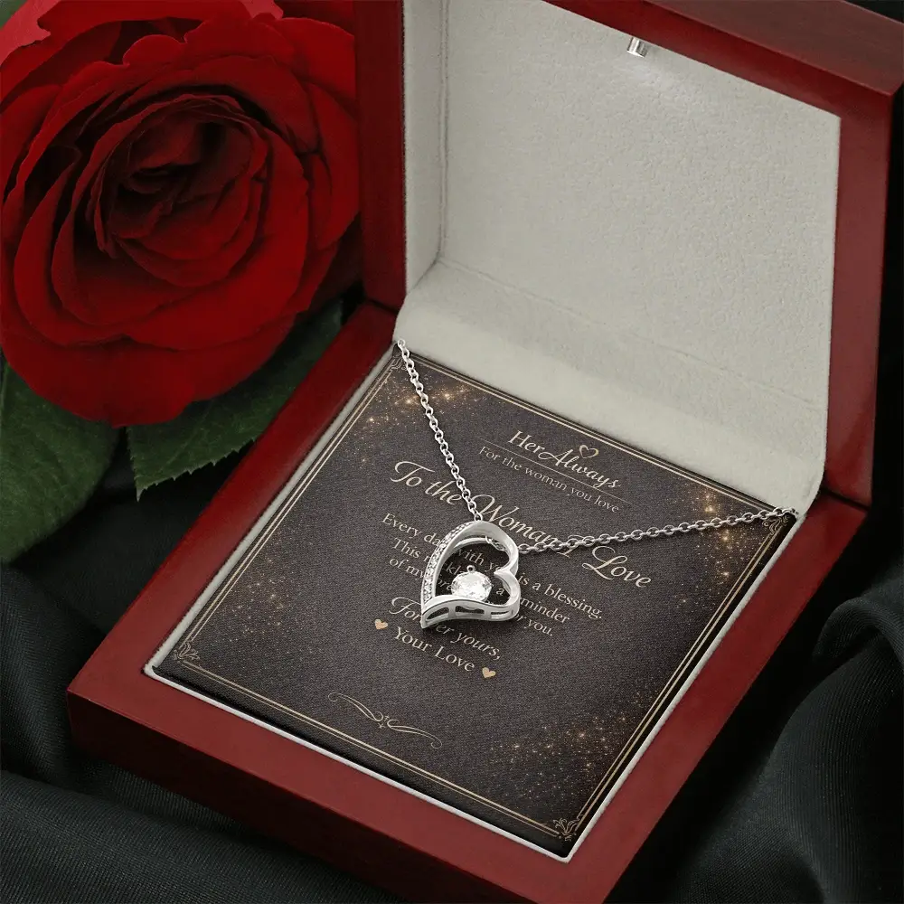

The best Valentine’s necklace for your girlfriend depends on how long you have been together and what you want the card to say. In the first two months, give something small instead. From 2 to 12 months, a heart necklace is the safest pick. After a year, choose interlocking hearts, a name necklace or a love knot. If she lives far away, choose the infinity. Our necklaces cost $59.95 to $109.95. For Valentine’s Day 2027, order by Wednesday, January 20.
Below: the right pick for each stage, a guide to what each necklace says, what you can and cannot personalize, card messages to borrow, a free order-by date tool, and ideas for giving it. Buying for a wife? Jump to Valentine’s necklace for your wife.
Quick Picks by Stage
Compare all five | New | First Valentine’s | Under $100 | Personalize | Card messages | Order-by tool | FAQ
| Together for | Best pick | What the card can say | Skip |
|---|---|---|---|
| Under 2 months | A small gift and a handwritten note (ideas) | That you are glad you met | Any necklace, “forever” cards |
| 2 to 6 months | Forever Love ($79.95) | That she makes your days better | Love knot, name necklace |
| 6 to 12 months | Forever Love or Interlocking Hearts ($79.95) | That you feel like a team | Anything that sounds like a marriage promise |
| 1 year or more | Custom Name ($69.95) or Love Knot ($109.95) | A real memory and a real plan | Lines that could be for anyone |
| Long distance | Infinity Love ($59.95) | That the miles are temporary | Gifts that need her to set something up |
Not sure? Choose the heart. It reads as affection, not as a big promise.
Compare the Five: What Each Necklace Says
Every HerAlways necklace arrives in a gift box with a message card. What changes is the symbol, the finish and the size. Here is how they compare for Valentine’s Day:
| Necklace | Price | What it says | Look and size | Think twice if |
|---|---|---|---|---|
 Forever Love Forever Love | $79.95 | Love, in the symbol everyone understands | Heart with a clear stone, silver-tone, about 0.8″ high | She dislikes hearts |
 Interlocking Hearts | $79.95 | Two people joined together | One rose-gold-tone heart, one silver-tone heart | You have dated only a few months |
 Infinity Love | $59.95 | Love that continues, even across a distance | Silver-tone, hangs on its side, about 1″ wide | You want something that says “new” |
 Custom Name | $69.95 | Made for her alone | Her name in cursive, up to 11 characters, silver-tone | You are not sure of the spelling |
 Love Knot Love Knot | $109.95 | A deep commitment | Small, delicate pendant, silver-tone, about 0.6″ high | The relationship is young |
Good to know before you order: our necklaces use a white gold or rose gold finish over steel, with cubic zirconia stones that are made in a lab. They are not solid gold or real diamonds, and each is made to order. For every symbol in detail, see 15 necklace symbols and their meanings.
What If She Does Not Like Hearts?
Some women simply do not wear heart shapes. If that is her, the Love Knot and Custom Name necklaces have no heart in them, and the Infinity is a plain loop, though its two loops are heart-shaped. If you are unsure whether heart jewelry works for her, read our answer on heart-shaped necklaces and whether they feel cheesy.
What If She Only Wears Gold?
Most of our necklaces are silver-tone. The Interlocking Hearts has one rose-gold-tone heart, so it suits someone who mixes metals. If she wears only yellow gold, look at what is in her jewelry box before you order. A piece she does not wear is the most common reason a jewelry gift misses.
New Girlfriend? Start Smaller (Under 2 Months)
If you have only just started dating, a necklace can say more than you mean. She may feel she has to match it. Give something light that shows you were listening:
- A handwritten note and her favorite dessert. Two honest lines are enough.
- A plan for the evening. Book the place she once mentioned, then say so on a card.
- One small thing tied to something she told you. A book, a tea, a plant.
Wait on: name jewelry, rings and any card that says “forever.” Save the necklace for her birthday or your next Valentine’s Day. Our guide on whether jewelry is a good Valentine’s Day gift has the full list of when to skip it.
First Valentine’s Day Together (2 to 12 Months)
If you have been together a couple of months or more, a simple necklace can be a good first Valentine’s gift. The test is whether the gift matches the relationship, not how much it costs. A small heart with a warm, short card says “I care about you.” It does not say “I am planning our future.”
- 2 to 6 months: the Forever Love Necklace ($79.95). Write about this year, not about forever. The heart necklace meaning guide explains what each heart style says.
- 6 to 12 months: Forever Love again, or the Interlocking Hearts Necklace ($79.95) if you already feel like a couple. Here is the interlocking hearts meaning.
Do not worry about doing less than the couple next door. A gift that fits the stage feels more romantic than one that is too big.
Valentine’s Necklace Under $100
Four of our five necklaces cost less than $100, and shipping is free:
- Infinity Love: $59.95
- Custom Name: $69.95
- Forever Love: $79.95
- Interlocking Hearts: $79.95
The Love Knot is $109.95. Our cheapest necklace is $59.95, so if you have been together only a short time and that feels like a lot, choose a smaller gift and write a longer, warmer card instead. The words cost nothing, and they are the part she keeps.
Personalized Valentine’s Gift for Her: What You Can Personalize
This is worth knowing before you order, because “personalized” can mean different things:
- The card: every necklace comes with a message card. You type exactly what it says, and we print it. This is the main way to make the gift yours.
- The necklace itself: only the Custom Name Necklace carries text on the necklace. It is her name, up to 11 characters, made exactly as you type it. Check the spelling.
- What we do not do: your message is printed on the card, not engraved on the other four necklaces. If you leave the card blank, we print the sample message shown in the photos.
The card is the part she will read, and likely keep. See how it works on our message card necklaces page, or read what a message card necklace means.
What to Write on the Valentine’s Card
You do not need a poem. A short message that is true beats a long one that is not. A simple way to write one:
- Name one specific thing. A moment, a habit, something she said.
- Say how it makes you feel. One honest sentence.
- Close simply. “Happy Valentine’s Day. Love, [your name].”
Examples by stage, with one thing to avoid at each:
New (2 to 6 months)
Happy Valentine’s Day. I like who I am when I am around you. I am glad it is you this year.
Avoid: “forever,” “always” and anything about the future.
Your first Valentine’s Day together
Happy Valentine’s Day. You turned an ordinary year into one of my best. I hope this reminds you of that.
Avoid: comparing her to anyone you dated before.
One year or more
Happy Valentine’s Day. I would still pick you in any room, any year. Thank you for choosing me back.
Avoid: a line that could be printed on any card. Add one real memory.
Long distance
Happy Valentine’s Day. The miles are the only thing I would change about us. Keep this close until I see you.
Avoid: promising a date you cannot keep. Say “soon” only if you mean it.
Want more? Our necklace gift message guide has 70+ messages to copy.

Will It Arrive by Valentine’s Day? (Order-by Date Tool)
Our necklaces ship free worldwide: about 6 to 12 business days in the US and 6 to 15 internationally. Valentine’s Day 2027 is a Sunday, so the tool starts on Friday, February 12. Change the date if you want it sooner. It uses the longer international time plus 2 extra business days as a cushion, so US orders have a little more room.
To have it by Friday, February 12, order by Wednesday, January 20. Carriers can run late in busy weeks, so earlier is safer. See our shipping page for details.
If It Might Arrive Late
- Give her the card on the day. Read it aloud, and tell her the necklace is on its way.
- Add one small gift to open that day, such as flowers or her favorite dessert.
- Give the necklace a few days later. It becomes its own moment.
How to Give It on Valentine’s Day

- Card first. Hand her the card, let her read it, then give her the box. The words land better before the gift.
- Make Sunday slow. Valentine’s Day 2027 falls on a Sunday. A late breakfast or a quiet dinner at home gives you time together.
- Bring a rose or her favorite sweet. It is small, and it makes the box feel like part of a plan.
- Long distance? Open it on a video call. Ask her to open the card first while you watch.
Our guide to giving a necklace has more ideas, even if you are nervous.
Valentine’s Necklace for Your Wife
After years together, the symbol can say more, and the card can be about something you have built. The Love Knot Necklace ($109.95) suits a settled, committed relationship, and Forever Love ($79.95) is a warm choice if you want to keep it simple. If this is an anniversary year, our anniversary necklace for your wife guide has more.
When a Necklace Is Not the Right Valentine’s Gift
A necklace is not always right. Choose something else if she does not wear jewelry, if you have dated only a few weeks, or if you are not sure she feels the same way yet. We say that because it is true. Our guide on whether jewelry is a good Valentine’s Day gift goes through it in full, and our romantic gift ideas have other options.
A Valentine’s Gift With Your Words Built In
If you feel like a real couple, the Interlocking Hearts Necklace ($79.95) is a warm Valentine’s choice. If you are earlier on, the Forever Love Necklace ($79.95) is the safer heart. Both come in a gift box with a message card you write yourself. Order by Wednesday, January 20.
See the Interlocking Hearts NecklaceFAQ: Valentine’s Necklaces for Her
What is a good Valentine’s necklace for a girlfriend?
A simple heart necklace is the safest choice for most couples. After a year or more, interlocking hearts, a name necklace or a love knot say more. For a long-distance girlfriend, an infinity necklace fits well. Add a card in your own words.
What necklace is best for a first Valentine’s Day together?
A heart, if you have dated at least two months and the card stays light. Skip name jewelry, love knots and cards that say “forever.” If you have dated for only a few weeks, give a small gift and a handwritten note instead.
Can I write my own message with a Valentine’s necklace?
Yes. Every HerAlways necklace comes with a message card, and you type the words you want printed on it when you order. If you leave it blank, we print the sample message shown in the product photos.
Can I engrave a Valentine’s necklace?
Your message is printed on the card, not engraved on the necklace. Only the Custom Name Necklace carries text on the necklace itself: her name, up to 11 characters.
How much should I spend on a Valentine’s necklace?
Spend what feels in proportion to your relationship. Our necklaces run from $59.95 to $109.95, and four of the five cost under $100. If that feels like too much for your stage, choose a smaller gift and write a longer card.
When should I order a necklace for Valentine’s Day?
Valentine’s Day 2027 is a Sunday, so aim for the necklace to arrive by Friday, February 12. To do that, order by Wednesday, January 20. That uses our longer international shipping time plus a small cushion.
What if she only wears gold or rose gold jewelry?
Most of our necklaces are silver-tone. The Interlocking Hearts Necklace has one rose-gold-tone heart and one silver-tone heart. If she wears only yellow gold, a different gift may suit her better.
What if she does not like heart necklaces?
Choose a different symbol. The Love Knot and Custom Name necklaces have no heart shape, and the Infinity necklace is a simple loop. Pair any of them with a card in your own words.